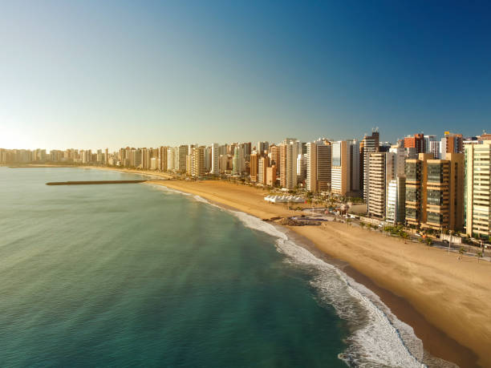

O Ceará é um estado localizado na região Nordeste do Brasil, com uma população de aproximadamente 9 milhões de habitantes. É conhecido por suas belas praias, como Jericoacoara, Canoa Quebrada e Fortaleza, que é a capital do estado. Além das praias, o Ceará possui pontos turísticos como o Parque Nacional de Ubajara, as dunas do Cumbuco e o Beach Park, um dos maiores parques aquáticos da América Latina. O governador atual do Ceará é Elmano de Freitas. O estado é famoso por sua cultura vibrante, festas tradicionais e culinária deliciosa, como a carne de sol e a tapioca.
